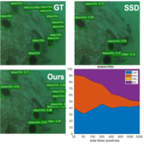

|
Greetings! My name is Zhihua Liu (Chinese: 刘志华). I am currently a Ph.D. student supervised by Prof. Huiyu Zhou at the Biomedical Image Processing Lab (BIPL) in the School of Informatics, University of Leicester. I am funded by the Graduate Teaching Assistantship of School of Informatics, College of Science and Engineering, University of Leicester. Previously, I served as an algorithm engineer in JD Logistics, JD.com. I received my M.Sc. in Artificial Intelligence from the University of Edinburgh in 2016, my B.Eng. in Internet of Things from University of Science and Technology Beijing in 2015. I spent my undergraduate final year at the School of Computing in University of Dundee, supervised by Prof. Stephen McKenna, Dr. Sebastian Stein and Prof. Jianguo Zhang. Email / CV / Google Scholar / Twitter / Github |

Dundee CS Lab, 2014 |
|
My research is focusing on computer vision and machine learning, especially in medical image analysis, unsupervised learning and deep learning. Representative papers are highlighted. |

|
Zhihua Liu, Lei Tong, Long Chen, Feixiang Zhou, Zheheng Jiang, Qianni Zhang, Yinhai Wang, Caifeng Shan, Ling Li, Huiyu Zhou IEEE Trans. on Medical Imaging, 2021 code / arXiv A novel approach named Context-Aware Network (CANet) for brain glioma segmentation. |

|
Long Chen, Zheheng Jiang, Lei Tong, Zhihua Liu, Aite Zhao, Qianni Zhang, Junyu Dong, Huiyu Zhou IEEE Trans. on Circuits and Systems for Video Technology, 2020 code / arXiv In this paper, we propose two perceptual enhancement models, each of which uses a deep enhancement model with a detection perceptor. The detection perceptor provides coherent information in the form of gradients to the enhancement model, guiding the enhancement model to generate patch level visually pleasing images or detection favourable images. |

|
Feixiang Zhou, Zheheng Jiang, Zhihua Liu, Fang Chen, Long Chen, Lei Tong, Zhile Yang, Haikuan Wang, Minrui Fei, Ling Li, Huiyu Zhou arXiv, 2021 code / arXiv A novel Hourglass network based model, namely Graphical Model based Structured Context Enhancement Network (GMSCENet), quantifies mouse pose estimation from videos. |

|
Zhihua Liu, Long Chen, Lei Tong, Feixiang Zhou, Zheheng Jiang, Qianni Zhang, Caifeng Shan, Xiangrong Zhang, Ling Li, Huiyu Zhou arXiv, 2020 code / arXiv Considering stateof-the-art technologies and their performance, the purpose of this paper is to provide a comprehensive survey of recently developed deep learning based brain tumor segmentation techniques. |
|  |
Long Chen, Zhihua Liu, Lei Tong, Zheheng Jiang, Shengke Wang, Junyu Dong, Huiyu Zhou International Joint Conference on Neural Networks (IJCNN), 2020 code / arXiv Sample-WeIghted hyPEr Network (SWIPENet) for underwater small object detection. |

|
Zheheng Jiang, Zhihua Liu, Long Chen, Lei Tong, Xiangrong Zhang, Xiangyuan Lan, Danny Crookes, Ming-Hsuan Yang, Huiyu Zhou arXiv, 2019 code / arXiv A novel method to continuously track several mice and individual parts without requiring any specific tagging. |

|
Lei Tong, Zhihua Liu, Zheheng Jiang, Feixiang Zhou, Long Chen, Jialin Lyu, Xiangrong Zhang, Qianni Zhang, Abdul Sadka, Yinhai Wang, Ling Li, Huiyu Zhou arXiv, 2019 code / arXiv A novel classifier, namely, Cost-sensitive Boosting Pruning Trees (CBPT), which demonstrates a strong classification ability on two publicly accessible Twitter depression detection datasets.. |
|
|
 |
Smart distribution grid: a market driven approach for the next generation of advanced operation models and services (DOMINOES)
May 2020-Now |
 
|
3D Reconstruction and Video Mosaicking with Applications to Fetoscopy
July 2020 Group project during UCL Medical Image Computing Summer School (MedICSS) 2020. Slides / Paper / Dataset |
 |
Automated analysis of housing construction progress through remote sensing
April 2020-April 2021 Collabrative work with Stevenson Astrosat Ltd. |
 |
Object detection in 3D point cloud
Jan 2017-Sep 2018 Industrial research and engineering work at JD Logistics, JD.com.Focused on vehicle, bicycle and pedestrian detection from 3D point cloud generated from LiDAR. Also focused on engineering work within point cloud data storge, data retrival, data access authentication development. |
|
|
 |
2020-2021
CO1109 Business and Financial Computing CO7218 Financial Services Information Systems CO3099 Foundations of Cybersecurity 2019-2020 FS0023 STEM Foundation Year Lab-Physics CO7507 Generative Development CO7506 System-Re-engineering CO3091 Computational Intelligence and Software Engineering |
|
|
|
I like traveling and photography. Here is my flickr.
I also like sports, especially table tennis. I started to receive professional table tennis training from the age of 5, got into the school team, and gave up training in high school because of the college entrance examination. Overall it's great to play oneortwo games with friends to relieve stress. Home Team: Leicester City F.C. / CSGO Ranking: The Global Elite/Faceit lvl 7. |
|
Many thanks Jon Barron for opensourcing this website template. |